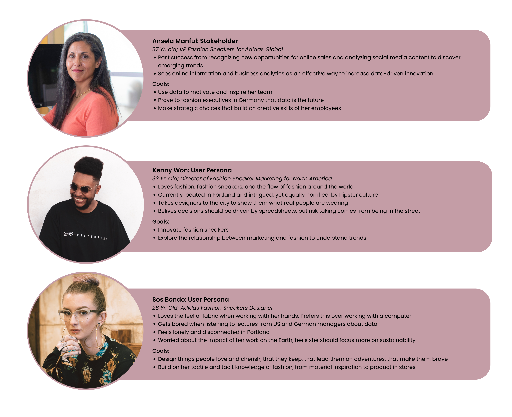
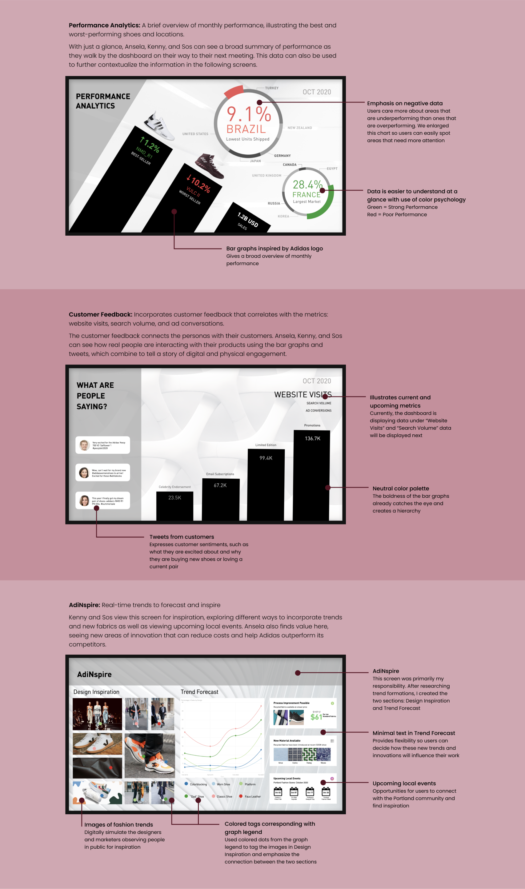
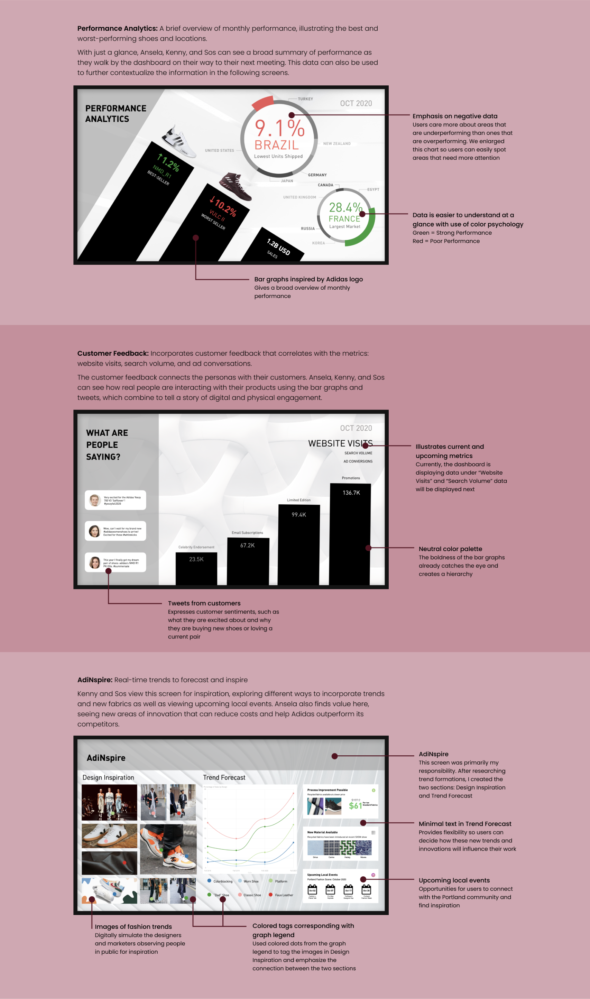

Adidas Dashboard Design
October - November 2020
Overview
Today, data plays an important role in the decision-making process. For retailers, the industry is in a mature state, meaning there is intense competition for a finite amount of customers. Here, data becomes critical as retailers can use data to better understand their consumers, helping them gain market share and increase profits.
The executives at Adidas would like to push toward a data-driven future, but not all of their employees share the same sentiment. Those unfamiliar with working with data view it as overwhelming, boring, or irrelevant to their work.
How can we present data for Adidas team members in a way that is simple and easily digestible, yet also insightful and inspirational to encourage them to make data-driven decisions?
The executives at Adidas would like to push toward a data-driven future, but not all of their employees share the same sentiment. Those unfamiliar with working with data view it as overwhelming, boring, or irrelevant to their work.
How can we present data for Adidas team members in a way that is simple and easily digestible, yet also insightful and inspirational to encourage them to make data-driven decisions?
Project Constraints
For this project, we were given the following constraints:
- Must design 1 dashboard (i.e. no personalization)
- Dashboard will be a widescreen 16x9 full HD screen located in the Portland office
- 3 personas are given (see below)
Goal
Synthesize data and user insights to create a dynamic digital dashboard that informs and inspires.
Provide information to help personas understand the current performance of Adidas fashion sneakers as well as define the future of the industry.
Problem Space
For this project, we were given 3 personas, summarized below:

We used an affinity diagram to understand the needs of our users. I noticed how Kenny and Sos valued their connection with the physical, real-world, and I highlighted this to my group. I also considered how a designer like Sos may interact with data, and I expressed to my group how our dashboard should not only be informational, but also inspiring.
We decided to focus on the following pain points:
We used an affinity diagram to understand the needs of our users. I noticed how Kenny and Sos valued their connection with the physical, real-world, and I highlighted this to my group. I also considered how a designer like Sos may interact with data, and I expressed to my group how our dashboard should not only be informational, but also inspiring.
We decided to focus on the following pain points:
- Data does not communicate future customer needs
- Data does not add value to the design process
- Users must manually gather data from various sources and must know what they are searching for
- Users feel a strong disconnect between the physical and digital world
Final Deliverables
Our final dashboard would be located in the Portland office as pictured below, in a large common area that receives heavy foot-traffic.

We decided the best way to tell a story using data was to distribute the data across 3 different screens:

We decided the best way to tell a story using data was to distribute the data across 3 different screens:

Takeaways
This project was a great way to learn how to balance the needs of different personas. Using an iterative design process, we were able to synthesize our data and feedback to pitch a final dashboard that addresses the needs of Ansela, Kenny, and Sos. While we designed each screen with a primary persona in mind, we also ensured that all the personas could benefit from every screen.
This project helped me better my understanding of data visualization while also learning how to design with a virtual team. Because of COVID-19, my team and I learned how to work completely virtually. We developed a collaborative team culture without ever seeing each other in person, juggled different timezones, and discovered how to allocate work effectively, so we could take advantage of this virtual setting.
This project helped me better my understanding of data visualization while also learning how to design with a virtual team. Because of COVID-19, my team and I learned how to work completely virtually. We developed a collaborative team culture without ever seeing each other in person, juggled different timezones, and discovered how to allocate work effectively, so we could take advantage of this virtual setting.